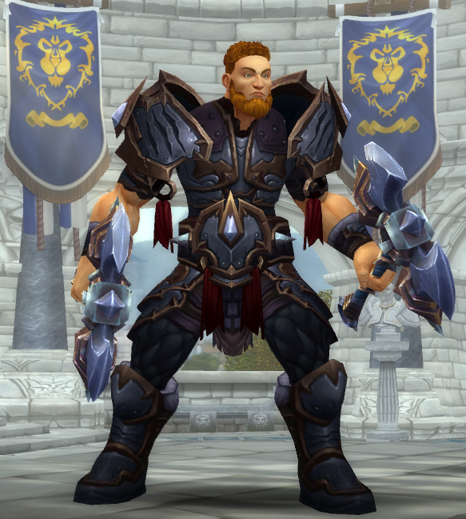
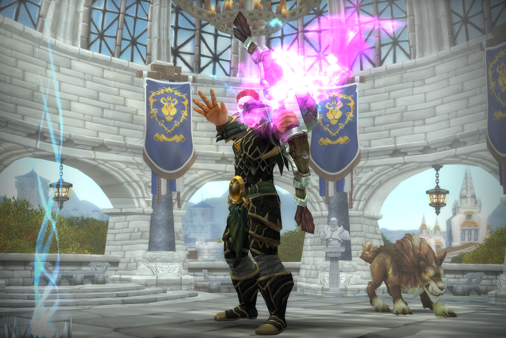
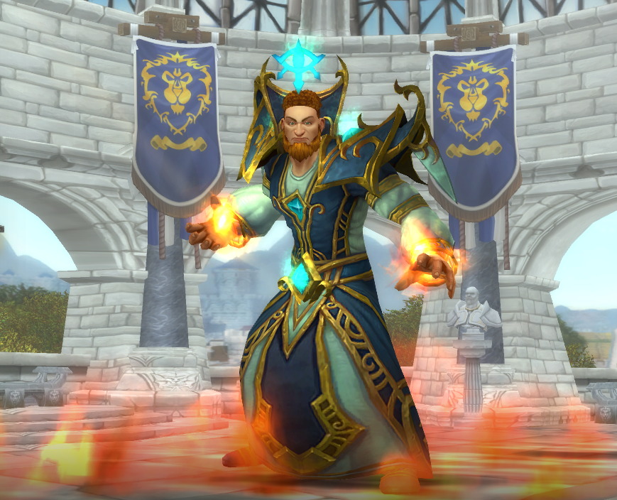
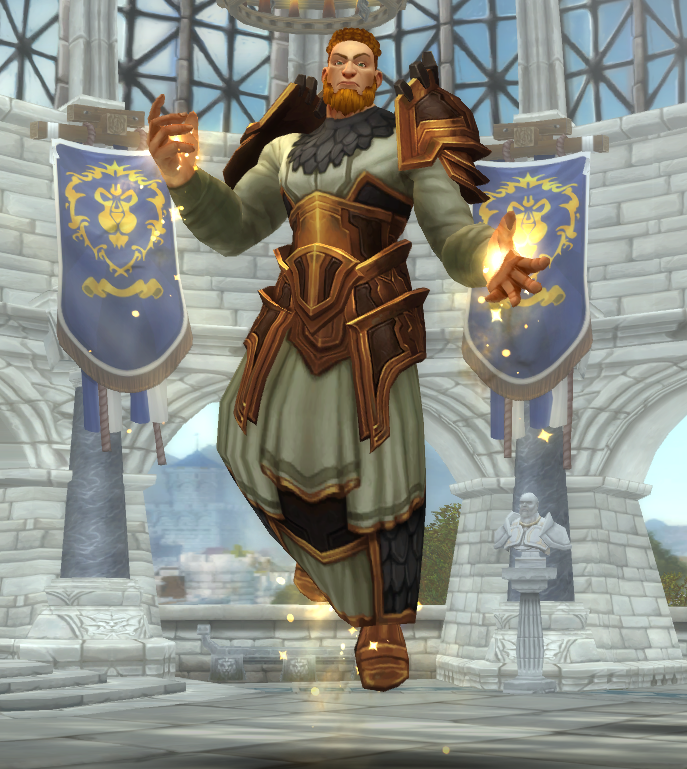
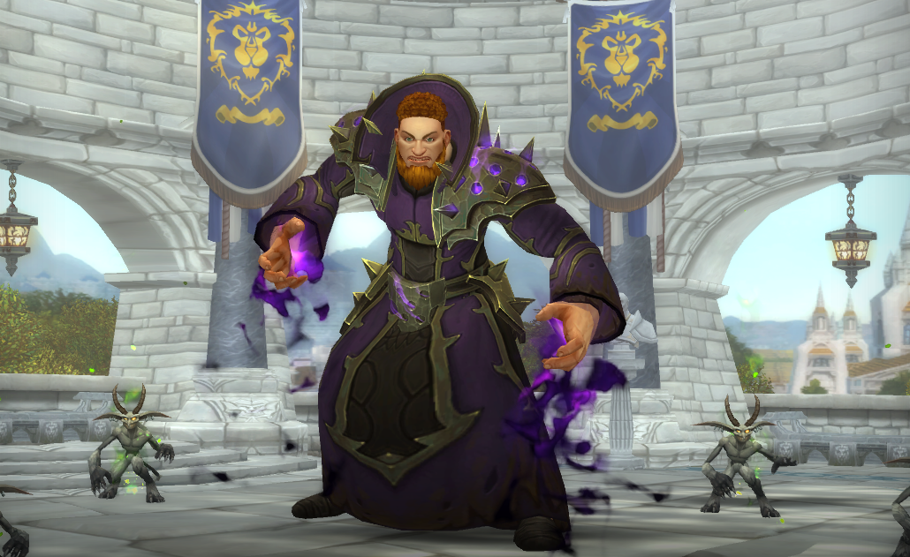
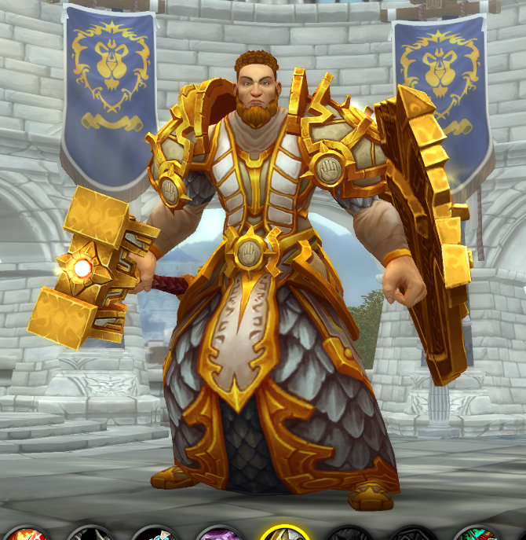

Воин

Воин в WoW Classic
Хотите быть самым известным игроком на сервере? Вам нравится защищать слабых и оберегать свою группу? Играйте воином, и вы всегда будете нужны!
- Плюсы: Вам никогда не придется играть одному. Воины всегда нужны для прохождения подземелий. Ни один танк в WoW Classic не может сравниться с воином.
- Минусы: Сильная зависимость от экипировки. Не могут лечиться. Очень долгое восстановление некоторых способностей. В начале боя ярость воина (ваш классовый ресурс) равна нулю, из-за чего в первые секунды выбор доступных умений крайне ограничен. Когда бой закончится, накопленная ярость будет постепенно уменьшаться, пока снова не достигнет нуля. Некоторые умение (например Рывок) увеличивают вашу начальную ярость, а высокоуровневые таланты ускоряют набор и замедляют потерю ярости.
Охотник

Охотник в WoW Classic
Если вам нравится выслеживать врагов вместе со своим верным зверем, Охотник - это то, что вам нужно.
- Плюсы: один из лучших классов для игры в одиночку, потому что никогда не играет "один". На 30-м уровне получает умение Притвориться мертвым - отличный способ мгновенно сбросить аггро в опасной ситуации.
- Минусы: охотникам приходится носить подсумок для патронов или колчан для стрел в ячейках для сумок. Им также надо добывать еду, чтобы кормить питомца, иначе он перестанет любить хозяина и убежит. Кроме того, репутация класса страдает из-за охотников, которые не умеют управлять своими питомцами. (Совет: отключайте Рык в подземельях и рейдах!)
Маг

Маг в WoW Classic
Вам нравится смотреть, как враги разлетаются на ошметки? Немногие классы могут тягаться с магами по части нанесенного урона.
- Плюсы: маг наносит огромное количество урона за считанные секунды. Он также может изрядно усложнить жизнь своим противникам, сочетая Превращение с замораживающими и замедляющим заклинаниям специализации Лед.
- Минусы: маги очень хрупки, поэтому поначалу вы будете часто умирать, особенно, пока не освоитесь с механикам АоЕ. Понятие «стеклянная пушка» отлично описывает стиль игры за мага: вы наносите колоссальный урон, но каждая ошибка может строить вам жизни.
Жрец

Жрец в WoW Classic
Вам нравится заботиться о своей группе и чувствовать себя незаменимым в подземельях и рейдах? А может, вы хотите отрывать лица в свободное время?
- Плюсы: отлично качается в специализации Тьма, может усиливать и ослаблять противников, лучший лекарь в игре
- Минусы: приходится тщательно следить за своей маной
Чернокнижник

Чернокнижник в WoW Classic
Если вы играете один и любите ходить по острию на пару с порабощенным демоном, ваш класс - чернокнижник!
- Плюсы: После 10-го уровня чернокнижникам больше никогда не придется играть в одиночку, ведь они смогут подчинять себе демонов. Чернокнижники используют разных демонов в зависимости от ситуации и типа противников. Они могут призывать членов группы в подземелье, создавать Камень здоровья для себя и других игроков, а также использовать Камень души для воскрешения.
- Минусы: Чтобы призывать демонов и использовать свои самые важные способности, чернокнижникам нужны Осколки Душ. Осколки занимают много места в сумках, и за их запасом постоянно приходится следить. Способности чернокнижников вынуждают вас рисковать, и в случае неудачи последствия могут стать незабываемыми. Например, используя Жизнеотвод, чернокнижник может преобразовать свое здоровье в ману, а затем вытянуть здоровье из противника при помощи Похищение жизни. Это эффективная тактика, но едва ли ее можно назвать безопасной. Еще одна популярная тактика - кайтить мобов при помощи страха. Одна ошибка, и на вашу голову свалится целая куча дополнительных врагов.
Паладин

Паладин в WoW Classic
Если вам нравится спасать жизни, и вы всегда представляли себя эдаким "рыцарем в сияющих доспехах", паладин - то, что вам нужно. (Но возможно придется носить платье.)
- Плюсы: паладинам любая ситуация по плечу. Они - одни из немногих бойцов ближнего боя, которые могут исцелять и усиливать себя.
- Минусы: Как и все бойцы ближнего боя, паладины очень сильно зависят от качества экипировки, поэтому качать их может быть непросто. В классической версии игры у паладинов нет способностей, позволяющих генерировать угрозу, поэтому они не слишком популярны в роли танков. Кроме того, у них нет дальнобойных способностей и оружия, так что пулить мобов, играя за паладина, - целое искусство (по крайней мере, пока вы не достанете Бумеранг Линкена в Кратере Ун'Горо.